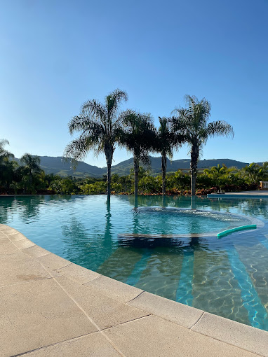

Local selecionado

Daj Risort & Marina
Um refúgio de luxo em meio à natureza de Ribeirão Claro. O DAJ Resort & Marina oferece conforto,
lazer e experiências únicas à beira da represa de Chavantes — com piscinas, spa, marina,
gastronomia refinada e um visual deslumbrante.
Rodovia Bernardino Teodoro Ribeiro, km 0,3, Ribeirão Claro - PR, 86410-000.
Faça Reservas
Telefone: (43) 3371-3900.